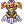

Fretless MvP Super Novice
| Super Novice | |||||||||||||||||||
|---|---|---|---|---|---|---|---|---|---|---|---|---|---|---|---|---|---|---|---|
 | |||||||||||||||||||
| Job Base: | Novice | ||||||||||||||||||
| Written By: | Fretless | ||||||||||||||||||
| |||||||||||||||||||
Preface
Hello there! If you're interested in a Super Novice capable of killing MvPs then this is the right guide for you (hopefully). In my guide you will find recommendations for skills, stats, and equipment, and if you find any way to improve the build, I would love to discuss this on Discord, as I am always interested in improving my character. My IGN and username on Discord is Fretless.
What's This Guide About?
This guide is a melee focused Super Novice Guide that is based upon getting a Meteor Strike (Meteor Strike quest found here!), which gives your Super Novice high attack at the cost of being forced to invest your skill points into certain skills. This guide will give you some recommendations on where you can level, what gear you should think about using, how to distribute your stats, and some general tips about Super Novices that want to focus on melee.
Overview
Super Novices are a fun and unique class to play. Below I have listed several pros and cons that detail my opinion of the super novice class.
Pros
Highly customizable - You can do any type of character that you want with a Super Novice. You can be a melee damage dealer, you can be a support buffer, you can tank damage, you can even be a caster. You may not be the best at any of these, but do not think you will be limited by playing a Super Novice, you just have to be creative on your approach.
Good survivability - You can get some really great damage reductions as a Super Novice. You get the best damage reduction shield in the game, and you can achieve really high flee. In addition to that, you also get Steel Body, the amazing damage reduction skill from the monk class, which auto-casts when you reach 0 HP for the first time each login.
Unique - You will find no other class quite like Super Novice, so you are bound to have an interesting experience.
Decent gear in spite of restrictions - While you miss out on some gear in the game(you can only equip gear marked for Novice, Super Novice, and All Jobs) you still have access gear that is amazing. You get the strongest ATK weapon in the game(the Meteor Strike), the best defensive shield(Novice Shield), and various other Novice only gear.
Cons
Low HP - This is not easily rectified, HP will always be a problem for Super Novice, using hp% gear helps a lot, but you will find even with the best setup possible (counting food, pots, and other factors), you will still find yourself with less than 20,000 HP.
Low SP - This isn't so much a problem with the regen cards listed in this build, I've found that even on long winded MvP's such as Scaraba Queen that I do not even run out of SP.
Low Damage - This is always an issue with a Super Novice, you can improve this by maximizing you Meteor Strike related skills, effective usage of Bowling Bash, and elemental converters. You still will not be quick at killing MvPs though.
Limited gear - If you have a Soul Linker buff you with Super Novice Spirit, you can equip significantly more items than previously before (See [http://www.divine-pride.net/database/skill/451/super-novice-spirit Super Novice Spirit] for specifics).
Expensive to fund - Nothing comes cheap as a Super Novice. You need plenty of high end gear to really make them viable. You get lucky with a few things like the Novice Shield and the Novice Boots, but other things like a Ascendant Crown will run you at least 20 million zenny, and that is just the tip of the ice berg.
Will you enjoy a Super Novice the same way that I do? It's quite possible if you enjoy a challenge, and for the few of you that are out there that are tired of playing the same old classes, and are tired of not being challenged by MvPs, then you've found the right class. If you have any questions about my guide, or would like any advice about your build, feel free to contact me on the forums or in game.
Build
These are the skills that I find useful to a Super Novice.
Super Novice Skills
Swordsman Tree
 Bash - A good skill to get you started, but Mammonite outshines this. If you don't have zeny for Mammonite, you really should rethink building a Super Novice, no offense, they just aren't cheap.
Bash - A good skill to get you started, but Mammonite outshines this. If you don't have zeny for Mammonite, you really should rethink building a Super Novice, no offense, they just aren't cheap.
 Magnum Break - I found this useful during the first few levels, mainly for trying to mob together a few monsters. You have to remember though that you have low HP, and thus cannot tank a lot of monsters at once, even with high flee, but there are still benefits to using this skill. After using Magnum Break you receive a 20% neutral damage buff.
Magnum Break - I found this useful during the first few levels, mainly for trying to mob together a few monsters. You have to remember though that you have low HP, and thus cannot tank a lot of monsters at once, even with high flee, but there are still benefits to using this skill. After using Magnum Break you receive a 20% neutral damage buff.
 Increase HP recovery - This is better as an end-game skill, when you are MvPing you don't have time to cast heal on yourself. So for leveling, avoid this in favor of healing skills, but get it in the end.
Increase HP recovery - This is better as an end-game skill, when you are MvPing you don't have time to cast heal on yourself. So for leveling, avoid this in favor of healing skills, but get it in the end.
 One-Handed Sword Mastery - This will provide you Bowling Bash down the road when you have your Meteor Strike, but getting it before then is not very important, and the points would be better spent elsewhere.
One-Handed Sword Mastery - This will provide you Bowling Bash down the road when you have your Meteor Strike, but getting it before then is not very important, and the points would be better spent elsewhere.
Mage Tree
 Increase SP recovery - You need this! This skill will help you keep your SP pool usable, when combined with two angeling cards you will never need another SP potion again while MvPing.
Increase SP recovery - You need this! This skill will help you keep your SP pool usable, when combined with two angeling cards you will never need another SP potion again while MvPing.
Archer Tree
 Owl's Eye - Free DEX means you can put more points elsewhere. With other buffs you can reach silly amounts of DEX and hit EVERYTHING.
Owl's Eye - Free DEX means you can put more points elsewhere. With other buffs you can reach silly amounts of DEX and hit EVERYTHING.
 Vulture's Eye - Pre-requisite for Attention Concentrate. Don't put more than you need to in this.
Vulture's Eye - Pre-requisite for Attention Concentrate. Don't put more than you need to in this.
 Attention Concentrate - You need to max this, it increases both AGI and DEX, and let me tell you, more of both of those means you will survive significantly longer.
Attention Concentrate - You need to max this, it increases both AGI and DEX, and let me tell you, more of both of those means you will survive significantly longer.
Merchant Tree
 Mammonite - This will be your primary single target leveling skill up until 110, I find it is still a good skill afterwards until you get comfortable with how to get the most out of Bowling Bash. Use it until you get your meteor strike in combination Magnum Break.
Mammonite - This will be your primary single target leveling skill up until 110, I find it is still a good skill afterwards until you get comfortable with how to get the most out of Bowling Bash. Use it until you get your meteor strike in combination Magnum Break.
Thief Tree
 Improve Dodge - Get this as the flee will help you survive in the long run. Really useful.
Improve Dodge - Get this as the flee will help you survive in the long run. Really useful.
Acolyte Tree
 Divine Protection - You need this skill maxed for your expanded job.
Divine Protection - You need this skill maxed for your expanded job.
 Demon Bane - You need this skill maxed for your expanded job as well.
Demon Bane - You need this skill maxed for your expanded job as well.
 Teleport - This skill is nice to have, and will prevent you from needing to carry fly wings.
Teleport - This skill is nice to have, and will prevent you from needing to carry fly wings.
 Heal - Very good while leveling, but leave it at what it needs to be for a pre-requisite at the end game.
Heal - Very good while leveling, but leave it at what it needs to be for a pre-requisite at the end game.
 Increase Agility - Max this as soon as you can, the AGI you get will not only help you level, it will help you survive significantly more stuff.
Increase Agility - Max this as soon as you can, the AGI you get will not only help you level, it will help you survive significantly more stuff.
 Blessing - This skill needs to be maxed just like Increase AGI, as it provides a +10 to STR, DEX, and INT. Very valuable.
Blessing - This skill needs to be maxed just like Increase AGI, as it provides a +10 to STR, DEX, and INT. Very valuable.
Expanded Super Novice Skills
Crusader
 Faith - Max this ASAP!!! This will give you significantly more HP, although the holy resistance is a bit useless since you will already be immune to holy damage with your armor.
Faith - Max this ASAP!!! This will give you significantly more HP, although the holy resistance is a bit useless since you will already be immune to holy damage with your armor.
 Holy Cross - Good skill if you're leveling up without a meteor strike as it provides good holy damage to enemies. I replace Mammonite with this while leveling against demons.
Holy Cross - Good skill if you're leveling up without a meteor strike as it provides good holy damage to enemies. I replace Mammonite with this while leveling against demons.
Wizard
You do not need any skills from this tree.
Hunter
You do not need any skills from this tree.
Blacksmith, Alchemist
 Hilt Binding - Get it. Pre-requisite for Weapon Research.
Hilt Binding - Get it. Pre-requisite for Weapon Research.
 Weapon Research - Get this for Meteor Strike, as it provides you with useful bonuses, but until you have meteor strike, do not worry about using this.
Weapon Research - Get this for Meteor Strike, as it provides you with useful bonuses, but until you have meteor strike, do not worry about using this.
 Axe Mastery - Get this for Meteor Strike, it really pulls through giving you more hit and ATK, but until you have meteor strike, do not worry about using this.
Axe Mastery - Get this for Meteor Strike, it really pulls through giving you more hit and ATK, but until you have meteor strike, do not worry about using this.
Assassin, Rogue
You do not need any skills from this tree.
Priest
You do not need any skills from this tree.
Monk
 Iron Fist - Get this for Meteor Strike, it provides a huge bonus to Meteor Strike damage.
Iron Fist - Get this for Meteor Strike, it provides a huge bonus to Meteor Strike damage.
Other Skills
Hidden
Steel Body - This is so useful when fighting strong mvps, like seriously. This will save your hide, and often give you enough time to regather your thoughts until it expires and you can start skill spamming again. If you're MvPing with a friend, you can tank like a pro with this. Happens the first time you reach 0 HP, and will not occur again until you re-login.
 Critical Explosion - Provides you 50 crit when you say the following phrases in order. There's one other phrase you can say, but it's all the same thing. With this build, you would have 110 crit with this skill active. Not bad. This can only be used when your experience is in intervals of 10% such as, at 10.0%, 20.0% - 80.0%, 90.0%, which isn't too much of a problem. When you're maxed out, you need to have over 99 million exp, which isn't too bad since you've made it that far, you can do it!
Critical Explosion - Provides you 50 crit when you say the following phrases in order. There's one other phrase you can say, but it's all the same thing. With this build, you would have 110 crit with this skill active. Not bad. This can only be used when your experience is in intervals of 10% such as, at 10.0%, 20.0% - 80.0%, 90.0%, which isn't too much of a problem. When you're maxed out, you need to have over 99 million exp, which isn't too bad since you've made it that far, you can do it!
- Dear angel, can you hear my voice?
- I am <Enter Your Name Here> Super Novice~
- Help me out~ Please~ T_T
- Insert random text here
You can macro this.
Final Skill Tree
Here is an image of the skill setup that I have found to be most useful during MvPing as a Super Novice.

As you see, you are going to have a limited choice of skills due to focusing on maximizing the damage of Meteor Strike, but you will still get your self buffs, HP/SP regen, and increased dodge. I have found that going away from this build tends to lead to me dying more against harder MvP's where deviation isn't an issue against weaker ones.
Build Stats
These are the stats that I have found are most beneficial. Temporal STR Boots will work together with your Meteor Strike, so we can focus the rest of your points into a more spread out build to take advantage of a Heroic Adventurer's Backpack, as well as the two Arc-Angeling cards used in the headgear.
- STR - 120 - Your bread and butter stat. Increase your damage and also increases your weight, I would argue that this is your most important stat as a Super Novice, even more so than VIT. Sure you can get more HP with VIT, but you can hold more potions to make up for a lack of vit with more STR, which I find more useful.
- AGI - 100 - Helps with attack speed and flee, very useful for a Super Novice as flee is your number one ability to avoid damage from monsters.
- VIT - 100 - Increases your HP and defense. Pretty darn useful stat, I keep mine at the same amount as the AGI stat. Provides bonus resistances and reductions to status effects like Burn, Stun, Deadly Poison, Poison, and Frozen.
- INT - 50 - Useful for more than just Matk for mages. Provides you the base SP needed to spam your skills, and also helps increase the amount of SP regen, does not need to be terribly high, as with this build you will find that you regen SP pretty quickly. I keep it at half of my VIT.
- DEX - 50 - Good for hitting monsters, but not too much else since you're not a caster, you don't need terribly much either since you have many great buffs that provide you with a ton of hit.
- LUK - 90 - when STR gets high it is easier to invest into LUK for more attack, also provides crit chance and perfect dodge for when you're in Iron Skin mode. Increasing this to 77 points with an Arc Angeling card will grant you a 100% increase to HP/SP regen, so at least that much is required, though there is nothing wrong with going slightly higher.
Equipment
I will bold the most recommended setup for each part, though I will put alternatives and recommendations in this section as well. Everything here is purely objective, and liable to be changed, and I am always open to suggestions for alternatives and improvements.
Headgears
| Item | Type | Way to obtain | Notes |
|---|---|---|---|
 Ascendant Crown [1] Ascendant Crown [1]
|
Upper | [Cash Shop] | This is a very important piece of gear to have, while a clean one will do if you cannot get a +9, an upgraded Ascendant Crown will provide you with extra HP, SP, and +5 to all stats. Any of the Super Novice headgear will help you, but if you plan on building a Super Novice, you should be prepared to spend over a billion zeny on proper gear. |
 Advanced Angels Kiss [1] Advanced Angels Kiss [1]
|
Upper | Crafted through [Eden Group Crystlal] | If you cannot get the Ascendant Crown, this is a viable headgear for you. It provides good set bonuses with the other Advanced Angel pieces, but has to be crafted. |
 Black Framed Glasses [1] Black Framed Glasses [1]
|
Middle | [Cash Shop] | Mdef from Black Frame Glasses is nice, as that is one weaker area that SN's can often struggle with. This headgear can be slotted with a Spiritual Augur from the [Cash Shop] |
 Gangster Scarf [0] Gangster Scarf [0]
|
Lower | [Cash Shop] | Gangster Scarf for the +5 attack |
| Lower | [Cash Shop] | Reduces damage from Demi-Human class monsters by 1%, increases damage to Demi-Human class monsters by 1%, and provides one VIT. | |
| Card | Monster drop | 300 HP and 100% increased HP/SP regen are key. With two of these you will not need to carry many if any SP pots. Now, Arc Angeling cards are luxury cards, and are not easy to obtain, so alternates would include an incubus card or an evil nymph card to improve your SP Situation | |
| Card | Monster drop | This card is a viable alternative that can provide you a nice bonus to your SP and SP recovery when paired with a Succubus card. | |
| Card | Monster drop | This card is a viable alternative that can provide you a nice bonus to your SP and SP recovery when paired with a Succubus card. |
Armors
| Item | Type | Way to obtain | Notes |
|---|---|---|---|
 Anti-Magic Suit [1] Anti-Magic Suit [1]
|
Armor | Obtained through [Geffen Magic Tournament] | This is the armor I would suggest going for, as it provides you with a good health modifier, MDEF, and bonuses if you pair it with a Physical Enhancer Ring |
|  Aegir Armor [1] | Armor | Seasonal Drop from [the 2016 Summer Festival] | This can be a good armor set if you feel that HP+% modifiers will not benefit you over a flat HP increase. |
 Advanced Angelic Protection [1] Advanced Angelic Protection [1]
|
Armor | Crafted through [Eden Group Crystlal] | Great MDEF on this armor, and this can be used when you cannot get anything better, though it needs to be made. |
| Card | Monster drop | Holy Elemental armor will really help you stay alive. Providing resistances to most common elements, and the only setback is you would take more damage from shadow elemental attacks. | |
| Card | Monster drop | When paired with an Incubus card, this will give you 1 bonus VIT, and 10% HP recovery. Very solid card when an Angeling card is not an option. |
Weapons
| Item | Type | Way to obtain | Notes |
|---|---|---|---|
 Meteor Strike [2] Meteor Strike [2]
|
Mace | Made through [Meteor Strike quest] | This hammer is your bread and butter, you can easily get upwards of +600 attack on it with only upgrading it to +4. You'll be limiting yourself by using this hammer, but trust me, it really is a boon to a Super Novice when MvPing. There is no alternative in my opinion. Meteor Strike gives you +10 ATK per refine, +7 ATK and +5 HIT per level of Axe Mastery, +10 ATK per level of Weaponry Mastery, and +30 ATK per level of Iron Fists. When Pushcart is level 10, you gain access to use Cart Revolution. For each level of Sword Mastery, you can use the equivalent level of Bowling Bash. |
| Card | Monster drop | Increases damage on boss monsters by 25%, since this build is for MvPing, this card is invaluable. | |
| Card | Made with materials from [Old Glast Heim] | Increases damage on medium and large sized enemies by 20% and an additional 15% when paired with a Khalitzburg Knight card on your shield. | |
| Card | Monster drop | Gives you a good amount of ATK and critical chance if you upgrade your Meteor Strike, so this can be a usable upgrade if you are not going for racial/size cards. |
Shields
| Item | Type | Way to obtain | Notes |
|---|---|---|---|
 Novice Shield [1] Novice Shield [1]
|
shield | Vendor in @go 20 | There is no better shield in the game for you, with 20% resistances to everything but neutral, you will find that you can take a lot more damage than you could before, even with Super Novices notoriously low HP. Even comes with a slot. |
| Card | Made with materials from [Old Glast Heim] | This card gives you +20 defense and adds a 25% resistance to medium and large sized monsters, and when paired with a White Knight card, will provide an additional 5% reduction from medium and large sized monsters. | |
| Card | Monster drop | An Alice card will give you 40% reduction against MvPs, which translates to a huge increase in survival. This would be a suitable alternative to a Khalitzburg Knight card. |
Garments
| Item | Type | Way to obtain | Notes |
|---|---|---|---|
 Heroic Backpack [1] Heroic Backpack [1]
|
Garment | Main Office Shop | At +9 this will provide you with some pretty great bonuses as well as an extremely useful 10% reduction of neutral damage. The difficulty and price of a +9 HBP is totally worth it in my opinion, but if you cannot get a +9 HBP then a +7 will do quite well until you can upgrade it or buy one at +9. |
 Advanced Angelic Cardigan [1] Advanced Angelic Cardigan [1]
|
Garment | Crafted through [Eden Group Crystlal] | If you cannot obtain a +7 or higher Heroic Backpack, this will be a good garment for you. It provides bonuses with other Advanced Angelic gear, and provides you with beneficial stats. |
| Card | Monster drop | A 20% reduction to neutral will balance out with your shield to make you have 20% resistance to all elements. If you are worried about the increase to shadow damage from having holy elemental armor feel free to swap this out for an Isis card, though in my personal experience, the 20% resistance to neutral provides significantly more use. | |
| Card | Monster drop | If you have Holy elemental armor and are worried about an increase of damage from the Shadow element, then this card is for you with it's 30% reduction to Shadow damage. | |
| Card | Monster drop | When leveling, or before you get a Meteor Strike, you may find that you want more attack speed, this is a card that can give you plenty of speed. |
Shoes
| Item | Type | Way to obtain | Notes |
|---|---|---|---|
 Temporal STR Boots [1] Temporal STR Boots [1]
|
Shoes | Crafted with materials from Old Glast Heim. See [Temporal Boots Page] | Temporal STR boots are pretty epic. They will give you a good boost to attack, HP, and SP if you have it upgraded well enough. Fighting Spirit and Bears Might enchantments are needed for it as well. Bears Might will give you a great boost in MvP fights when it procs, and Fighting Spirit gives you a direct ATK and HIT boost. |
 Novice Shoes [1] Novice Shoes [1]
|
Shoes | Vendor at Lighthalzen(194,48) | Novice Shoes are pretty great. 5% extra HP and a lot will really help build upon your viability. You can purchase this right off the bat from a vendor too, so there is no reason to not purchase it. |
| Card | Monster drop | 10% increase to HP/SP. Also it provides HP and SP regeneration. | |
| Card | Monster drop | This card is very useful when you have a low refine rate on your card, as it's effect is doubled when your refine rate is +4 or less, providing a 8% bonus to max HP and SP. | |
| Card | Monster drop | This card provides a 10% bonus to max HP and 1 INT, however it does not provide any SP bonus, and would not be as good as a Gold Acidus card in my opinion. | |
| Card | Monster drop | This card provides a 10% bonus to max HP and SP and 2 STR, however it requires that you upgrade your boots to +9 or higher. |
Accessories
I will state that this area has no specifically recommended gear, and should be taken more as a guidelines section. Different situations will call for a different combination of accessories. Just remember to try to always be prepared for anything.
| Item | Type | Way to obtain | Notes |
|---|---|---|---|
 Physical Enhancer Ring [1] Physical Enhancer Ring [1]
|
Accessory | Obtained through [Geffen Magic Tournament] | 5% increased attack will make up for taking so many defensive cards later down the road, and when paired with an Anti-Magic Suit you get 5% aspd. |
 Pendant of Chaos [0] Pendant of Chaos [0]
|
Accessory | Obtained through [Nightmarish Jitterbug] | This Accessory lacks a slot, but makes up for it in bonus reductions, bonus attack, and the chance to cast Chaos(and confuse enemies). Synergizes extremely well with a Pendant of Harmony. |
 Pendant of Harmony [0] Pendant of Harmony [0]
|
Accessory | Obtained through [Nightmarish Jitterbug] | This Accessory lacks a slot, but makes up for it in bonus reductions and the ability to cast Renovatio or Sanctuary while being hit (both of these provide HP regen in different ways, and can make you near immortal in Iron Skin mode). Synergizes extremely well with Pendant of Chaos by providing bonus stats to make up for what is lost by the pendant. |
| Card | Monster drop | 20 attack is pretty sweet. The -1% HP can be tolerated. Overall a solid card. | |
| Card | Monster drop | Provides a chance to cast Increasing Agility when taking damage, and when paired with a Lude card gives a bonus to max SP. | |
| Card | Monster drop | Provides a chance to cast Endure when taking damage, and when paired with a Lude card gives a bonus to max HP. |
Gameplay
Playing Super Novice is really quite fun. There is a famous quote from President John F. Kennedy, "We choose to go to the Moon in this decade and do the other things, not because they are easy, but because they are hard". President Kennedy's quote really applies to the mentality of a Super Novice, it's not the strongest, nor is it the easiest class to play, but it is fun because it is a challenging class.
Fighting as a Super Novice
Now for fighting an MvP you have to do your research, you should know what skills the MvP can do, and what the elemental weakness of the boss is. If the boss can cast earthquake, you are going to find it will be challenging to stay alive, but it is not impossible with proper preparation. Make sure you bring plenty of HP potions, and make sure that you are not overburdened (even to 50%), so you are still regenerating SP and HP as this will help keep you alive.
Bowling Bash is your primary attack skill against MvPs. It does quite good damage if you are able to stand in the correct spot (There is an invisible grid on every map in which Bowling Bash is weaker. The grid is present on every cell that is divisible by 40 on the X and Y coordinates as well as the five adjacent cells to those, and you can type /where to find your coordinates.), make sure you spend time practicing this, and pay attention to the placement of monsters that the MvP spawns. You should be able to find a spot where you can easily kill the mobs that the boss will spawn, as spawning mobs takes up time that the boss would otherwise spend attacking you.
When you have a Steel Body proc, use this time to hammer away directly on the MvP, especially if you have the Lude and Quve card combination (provides you with auto-cast chances for increase agility and endure). You will not need to heal as much, and you will not be able to use skills. This is a good time to collect your thoughts and focus on what you need to do, as when it runs out, you should try to be at full HP and SP ready to continue killing the MvP at full speed.
Make sure that you maintain your buffs and any potions that you may be using. Every little edge that you can get during a fight will help you survive in the long haul, and could be the difference between being able to solo an MvP or not. Do not worry if you cannot solo any specific MvP, as not everyone will be able to solo them all, but just be patient and keep on working the boss down, and you will be successful.
Leveling
Leveling a Super Novice is not the most fun activity that I can think of, but it is something that you have to do if you want to play one. I recommend a combination of [Eden Board quests], and Official NRO leveling Guide[Gramps quests]
- Lv1 - Lv26
During this phase, you should focus on getting to level 26, which can be most easily done in Payon Dungeon, so you can get your Eden Dagger from the [Instructor Boya quest], which will help you speed things along. You will not have any skills as you cannot become a Super Novice until later, so your main way to kill mobs for quests is melee. At this point you won’t have the gear, nor the weight capacity to hold items to keep you alive, so if you have a friend able to help you fight, take advantage of that. Leveling after this point does start to become a little simpler as you start getting skills when you turn into a Super Novice. Use Bash and Magnum Break to start speeding things along, and if you can manage have someone help you level up. Start getting your Novice gear as these will help provide you with the defensive aid that you need.
For stats at during these levels, I would advise to get both DEX and STR to 30, this will allow you to hit monsters consistently, and
- Lv26 - Lv55
From Level 26 until 38 focus on killing Poison Spores in Geffen Dungeon. Thara Frogs are great monsters to fight, and quests are available for them from level 38 until level 55, and they provide a simple method of getting good experience. Killing Thara Frogs is not the most rewarding Eden Board quest EXP-wise, but it is very simple, and does not require much in the way of gear, and is easy to handle for a Novice.
At base level 45, you should advance to the Super Novice job.
By level 55 I would recommend that you have 40 STR and AGI, and 50 DEX. The remaining points can be placed into either INT to boost SP, or into VIT to boost your HP depending on what you find yourself needing.
- Lv56 - Lv70
From my experience, it is easiest to kill Sohees in Payon Dungeon 4 at this level. There are few aggressive monsters in this map, making it easy to solo Sohees one at a time. The down side of this is that there is only one monster in this area that you can kill for quests, so you cannot complete multiple quests at a time. You can try Orc Dungeon, but I found that it can be troublesome to maintain a sufficient amount of HP/SP at this stage even with the usage of potions to handle groups of monsters.
Your stats by level 70 should be: STR = 40, AGI = 70, VIT = 10, INT = 10, DEX = 50, LUK = 1
- Lv71 - Lv84
During these levels, kill Punks and Ridewords in the Clock tower Dungeon. These should be fairly easy to kill with a few uses of Mammonite each, and will help you level quickly. The EXP for quests in this range all reward the same amount of EXP, so you can do which ever you find easiest.
Your stats by level 84 should be: STR = 50, AGI = 80, VIT = 30, INT = 30, DEX = 50, LUK = 1. You will have a few points left over to spend in either AGI, INT, or VIT go with what you feel you need.
- Lv85 - 91
Getting to Gramps 85+ will be a challenging task for sure, but not impossible. Information of gramps quests can be found here Official NRO leveling Guide if you are interested in going the Gramps route. I was able to solo my Super Novice to level 115 before I finally chose to quest with anyone, it was not easy, and I would not recommend leveling solo past this group as it was difficult and time consuming.
When in a Gramps party, you should try to be a Puller. As a Puller, you job is to round up as many enemies as you can so the AoE classes can take out as many monsters as possible.
If you chose to kill monsters solo still at this point, I would recommend the three from Turtle Dungeon board quests. While the monsters are aggressive, there are not so many of them that you would be overwhelmed. There are also three monsters in Turtle Dungeon that you can kill for the quest board, which makes this level section speed up.
Your stats by level 91 should be: STR = 50, AGI = 80, VIT = 40, INT = 40, DEX = 50, LUK = 1.
- Lv91 - 99
For this range I would suggest: Siroma, Roween, and Stapo quests in the Ice Dungeon/Veins section. This group is not terribly difficult, and can be completed with minimal gear. Siroma can freeze you, but they are not aggressive, so you do not have to worry about being overwhelmed. Roween are aggressive, but are easily found alone in the field east of Rachel. Outside of veins you can find Stapo, which are easy to kill, are often isolated, and do not summon other mobs.
When you reach base and job level 99 you need to change to an Expanded Super Novice.
Your stats by level 99 should be: STR = 55, AGI = 80, VIT = 50, INT = 49, DEX = 50, LUK = 1.
- Lv100 - 110
Carats, Loli Ruri, and Arclouse were the easiest for me at this level. While none of them are in the same map, they are not terribly hard to kill. I would be careful of Carats though, as they can cast a spell, Hallucination, which flips your screen up side down, for me this causes nausea so be warned, and can be cured with the use of a green potion. Loli Ruri are not the easiest to kill at this level, but the amount of EXP they give as a reward is quite good, so if you are teamed up, this would be a monster to kill. Arclouse are fairly easy to kill if you are willing to make the trip out to fight them.
Your stats by level 110 should be: STR = 70, AGI = 90, VIT = 60, INT = 50, DEX = 50, LUK = 1.
- Lv111 - 120
In this range you can kill Venatu if you have sufficient damage and are using a Meteor Strike(At this point you can only obtain one if you buy it from another player). You can group these if you would like, but I would not recommend doing too many at once, as they can quickly overcome you. Raydric, Khalitzburg, and Wanderers are good kills in this level range as well, if you do not have a Meteor Strike, you can use Holy Cross on these enemies to do fast single target hits that do good Holy damage.
At level 115 you can take on the Gramps 115+ board quest Official NRO leveling Guide which will give you a considerable amount of levels depending on the rotation.
Your stats by level 120 should be: STR = 80, AGI = 100, VIT = 65, INT = 50, DEX = 50, LUK = 1.
- Lv121 - 130
All of the Rachel Shrine monsters would be a good choice at this level. They can group up on you, but as long as you take them on one-on-one, you should have enough flee by this point to take care of them without getting hurt. Holy Cross is another skill which will help you along here.
Your stats by level 130 should be: STR = 90, AGI = 105, VIT = 74, INT = 50, DEX = 50, LUK = 1.
- Lv131 - 140
Rake and Antler Scaraba are good mobs to fight at this level for you, they take a while to kill, but should not present too much of a problem if you bring along a Fire Elemental Converter and use Mammonite and Magnum Break. Do be careful of the monsters mobbing up on you as usual, as you do not have the survivability to face these monsters. This area will feel like it goes on for ever, but just know that leveling gets easier after this part.
Your stats by level 140 should be: STR = 100, AGI = 110, VIT = 79, INT = 50, DEX = 50, LUK = 1.
- Lv140+
From level 140+ I would recommend fighting monsters in Nightmare Clocktower, specifically Nightmare Punks and Big Ben. These two are fairly easy to kill, and will not hit you terribly often with your level of flee. Once you are level 145+ you can take part in Gramps 145+ board quests Official NRO leveling Guide, and you should use a combination of these two sets of quests to get to 175!
About the Author
My name is Fretless, and I am an American Ragnarok Online player. I have been playing for 10 years through out various official and private servers, typically focusing on Super Novices, Pre-Renewal Lord Knights, and various for fun builds. I first fell in love with the Super Novice several years ago when I ran a server and had extensive time to test out the classes capabilities (this was Pre-Renewal, and they were a pale shadow of what they are now, but they were still fun). Since then I have spent the majority of my time playing Ragnarok Online dedicated to furthering Super Novices, and helping others learn about what I find to be the most fun class in the game.
Credits/Thanks
I would like to thank Rakugaki (check his guide out too!), Shin Chan, and the other members of the Pocket Heroes' guild who helped me theory craft this build. The GM team for helping me edit this guide. Without them, I would not have had the motivation to make this guide. Best of luck to you, and thank you for reading my guide!